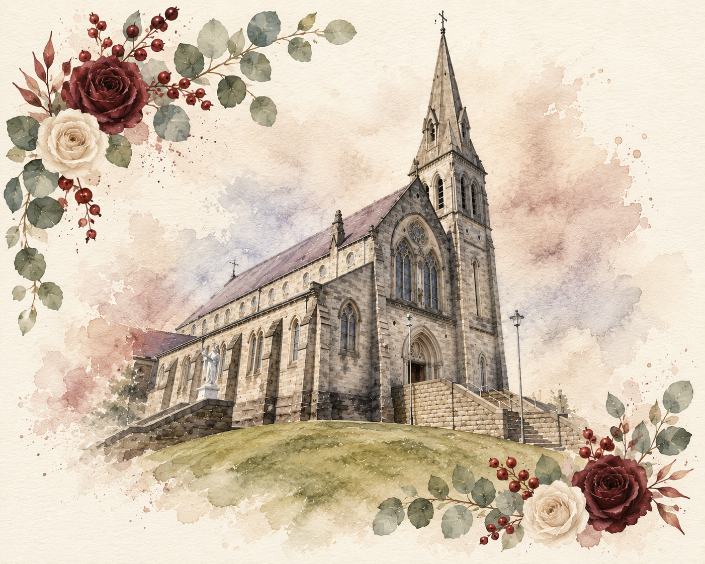
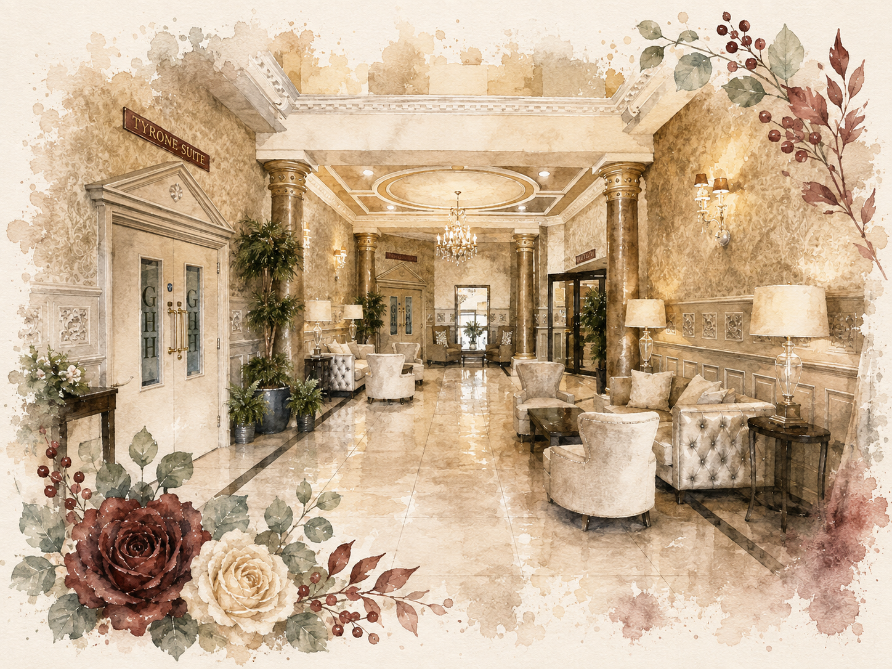
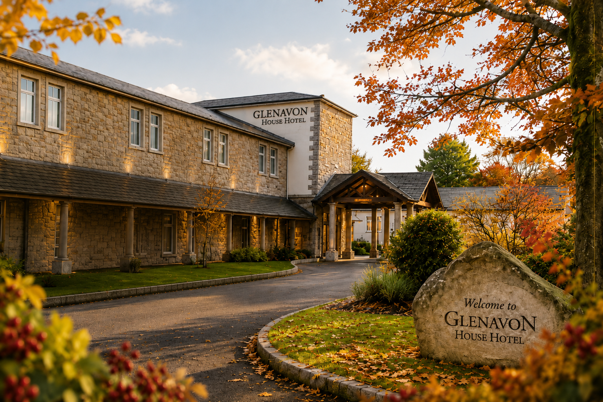
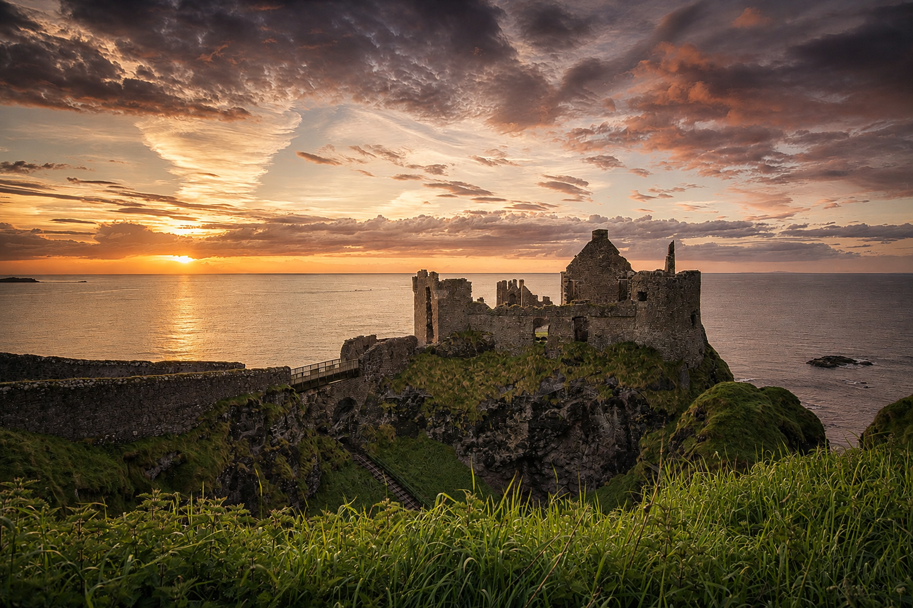
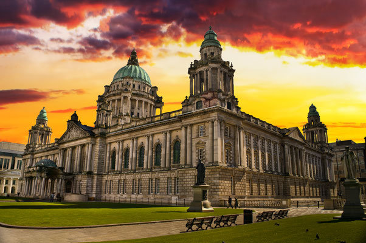
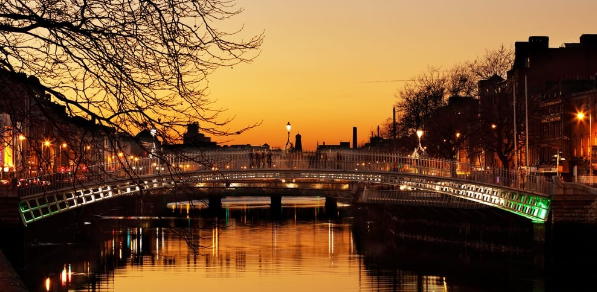
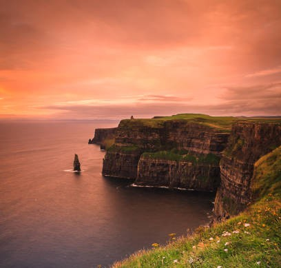

13:00
Ceremony
Vows, tears, and one very nervous groom.
JOYFULLY INVITE YOU TO CELEBRATE THEIR MARRIAGE
09.10.2027
Choose your language
until we say I do
Here is how our day unfolds
13:00
Vows, tears, and one very nervous groom.
15:00
Bubbles first, speeches later.
17:00
Fork this way, please.
19:00
Sugar, spice, and a shared slice.
19:30
Brace yourselves...the party can't be stopped!
Ceremony
Magherafelt
Ceremony starts at 13:00 and guest arrival is from 12:30.

Reception
Cookstown, Northern Ireland
Just a short drive from the church, the celebrations will continue at Glenavon House Hotel.


Our Venue
Nestled along the River Ballinderry and surrounded by beautiful grounds, the Glenavon House Hotel is the perfect setting for our celebration — a place to relax, celebrate, and dance the night away.
Special Wedding Rate
A limited number of rooms have been reserved for our wedding guests at a special discounted rate.
This rate is not available online.
Please book directly with the hotel by phone or email and quote “Laura & Peter, 9 October 2027” to receive the wedding rate. Guests staying at the hotel can also make the most of its leisure and spa facilities — perfect for a little relaxation before or after the festivities.
Travel Information
Your journey to Ireland
Whether you’re travelling from near or far, we’re so grateful you’re making the journey to celebrate with us.
We’ve gathered everything you need for planning your visit — airports, getting to Cookstown, accommodation and a few ideas for exploring Ireland while you’re here.

Dunluce Castle, Northern Ireland
The closest airport to our venue, with connections to many destinations. From Hungary, a connecting flight is required, with routes via England often the most convenient.
Approx. 40 minutes from the venue · Car & bus options availableIdeal for combining your trip with a stay in Belfast. From Hungary, connecting routes are available, including convenient options via Amsterdam and Great Britain.
Approx. 1 hour from the venue · Car & bus options availableThe easiest option for direct travel from Budapest, with excellent international connections and regular coach services north to Northern Ireland.
Approx. 2 hours from the venue · Car & coach options availableWe want our overseas guests to feel at home while you’re here.
Laura has arranged accommodation for guests travelling from abroad. Please contact her directly for details and availability.
Stay for a little while...
Coming all this way? We’ve put together a few ideas for making the most of your time in Ireland — whether you’re joining us just for the celebrations or turning the wedding into a little Irish adventure.
Just here for the celebrations
8–11 October 2027
Dublin/Belfast → Cookstown → The Wedding → Dublin/Belfast
Dublin → Cookstown
Guests can take a morning flight to Dublin and then travel north towards Cookstown/Magherafelt. Check into accommodation during the afternoon, settle in and enjoy a relaxed evening before the wedding.
Magherafelt → Cookstown
The celebrations begin around noon and continue late into the evening.
Relax · Recover · Celebrate
No alarms necessary. Enjoy a leisurely morning after the wedding before joining Laura & Peter in the afternoon to continue the celebrations. Guests staying at the Glenavon can also enjoy the hotel’s leisure facilities.
Cookstown → Dublin
After breakfast, travel back towards Dublin Airport for the journey home.
Turn the journey into an adventure...
Dublin → Belfast → Causeway Coast → Cookstown

Car recommended
Arrive in Dublin and enjoy your first afternoon exploring the city centre, its historic streets, parks, pubs and restaurants.
Spend the morning exploring Howth or Malahide, then travel north to Belfast for the evening.
Enjoy a full day in Belfast, with options including City Hall, the Cathedral Quarter and Titanic Quarter, followed by an evening in the city.
Belfast → Giant's Causeway → Dunluce Castle → Cookstown
Spend your final sightseeing day on the Causeway Coast before travelling to Cookstown/Magherafelt and checking into your wedding accommodation.
Next stop: the wedding. ♡
Dublin → Dublin Coast → Belfast → Causeway Coast → Cookstown

Car recommended
Arrive, settle in and enjoy a relaxed first afternoon and evening in Dublin.
Spend a full day exploring Dublin at your own pace.
Choose Howth or Malahide for a relaxed coastal morning before travelling north to Belfast.
Spend the day exploring Belfast, with plenty of time for the Titanic Quarter, Cathedral Quarter and city centre.
Belfast → Giant's Causeway → Dunluce Castle → Cookstown
Take the scenic route through the North Coast before arriving in the wedding area for Friday evening.
Next stop: the wedding. ♡
Dublin → Galway → Cliffs of Moher → Belfast → Causeway Coast → Cookstown

Car Strongly Recommended
Arrive in Dublin, settle in and spend your first afternoon and evening discovering the city.
Enjoy more time in Dublin and choose Howth or Malahide for a coastal escape.
Dublin → Galway
Travel west to Galway and spend the afternoon and evening exploring its colourful streets, restaurants and traditional music scene.
Overnight · Galway
Galway → The Burren → Cliffs of Moher → Galway
Make this the big landscape day. Explore the Burren and the Cliffs of Moher before returning to Galway for the evening.
Overnight · Galway
Galway → Belfast
Travel north-east to Belfast, check in and enjoy a relaxed afternoon and evening in the city.
Overnight · Belfast
Belfast → Giant's Causeway → Dunluce Castle → Cookstown
Spend the final day travelling along the North Coast before heading inland to Cookstown/Magherafelt and settling in for the wedding.
Next stop: the wedding. ♡
Routes and timings are intended as inspiration only. Transport schedules, attraction opening times and travel conditions may change, so please check the latest information when planning your journey.
However long you stay, we're simply happy you're coming. ♡
Frequently Asked Questions
Everything you might need to know before celebrating with us.
Please arrive by 14:30 for seating and welcome drinks.
The ceremony will take place at the Church of Our Lady of the Assumption in Magherafelt. Afterwards, the celebrations will continue at Glenavon House Hotel in Cookstown, Northern Ireland.
Cocktail attire in soft neutrals is perfect.
The ceremony begins at 1pm. After we are married, we will have group photos outside the church, so please do not rush away. The wedding reception starts at 3pm at Glenavon House Hotel, with drinks and finger food, including a few Hungarian treats. We will join the reception once we have finished our photo session, and there will be entertainment during the reception, so it is not to be missed. Dinner will begin from 5pm, with speeches at 5.15pm, and we will finish dinner with the wedding cake. Then it is time for the first dance and the party. We will have a live band playing a mix of Irish, Hungarian and international songs, followed by a DJ. Late-night food will be served from 10pm, and the DJ will finish at around 1am due to venue restrictions. Late-night drinks will be available at the hotel bar.
The wedding will be indoors, with very close access to the outdoor terrace at Glenavon House Hotel.
Complimentary on-site parking is available, with plenty of spaces for our guests.
Please follow the names listed on your invitation when replying.
If your invitation includes a plus one, please include their name in your RSVP.
Please include any dietary requirements or allergies in your RSVP message.
Please RSVP by 1 August.
A limited number of rooms have been reserved for our wedding guests at a special discounted rate.
This rate is not available online.
Please book directly with the hotel by phone or email and quote “Laura & Peter, 9 October 2027” to receive the wedding rate.
Guests can leave their cars at the hotel overnight and collect them the following morning.
Use the RSVP form below and send via Gmail.
Please use the contact details below and we will be happy to help.
Irish wedding traditions can include handfasting, Claddagh rings, traditional music and lively celebrations. Every couple chooses the traditions that feel most meaningful to them.
Hungarian weddings often include lively music, dancing, heartfelt speeches and plenty of food and drink. Some celebrations may also feature traditional games or customs, but every couple creates a day that feels personal to them.
Questions? Contact us anytime.